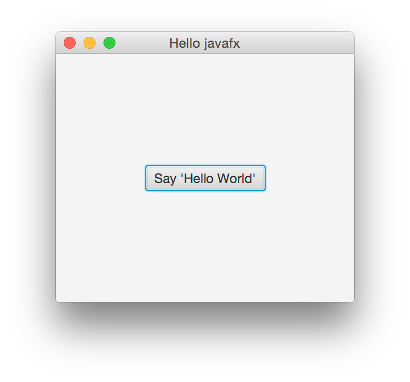

JavaFX 是目前 Java 發展的重點項目，自 Java 8 後已經整合進 JRE 裡面，JavaFX 最新 引我的地方，在於他的介面在 Linux 下也非常美觀，想想以前就是因為 Java 寫出來的程 式和 Linux 環境下不搭，所以非常排斥使用 Java 寫程式。
這篇文章主要是根據 Oracle 官方所提供的 JavaFX 教學 Hello World, JavaFX Style 轉 變成 Clojure 的版本。
先來看看 JAVA 要怎樣寫
我們的程式碼是從 Oracle 的 JavaFX 教學 Hello World, JavaFX Style 取得，其內容如下:
package helloworld; import javafx.application.Application; import javafx.event.ActionEvent; import javafx.event.EventHandler; import javafx.scene.Scene; import javafx.scene.control.Button; import javafx.scene.layout.StackPane; import javafx.stage.Stage; public class HelloWorld extends Application { public static void main(String[] args) { launch(args); } @Override public void start(Stage primaryStage) { primaryStage.setTitle("Hello World!"); Button btn = new Button(); btn.setText("Say 'Hello World'"); btn.setOnAction(new EventHandler<ActionEvent>() { @Override public void handle(ActionEvent event) { System.out.println("Hello World!"); } }); StackPane root = new StackPane(); root.getChildren().add(btn); primaryStage.setScene(new Scene(root, 300, 250)); primaryStage.show(); } }
建立我們的專案
現在我們來建立一個新的 clojure 專案
coldnew@Rosia ~ $ lein new helloworld
專案建立完成後，我們要稍微修改一下 project.clj ，加上 :main 讓我們可以使用
lein run 直接執行主程式，同時要記得加入 :aot :all 這一行來啟用 AOT (Ahead of
Time) 編譯。
(defproject helloworld "0.1.0-SNAPSHOT" :description "FIXME: write description" :url "http://example.com/FIXME" :license {:name "Eclipse Public License" :url "http://www.eclipse.org/legal/epl-v10.html"} :dependencies [[org.clojure/clojure "1.7.0"]] :aot :all :main helloworld.core)
編輯 core.clj
接著編輯 src/helloworld/core.clj ，將原本的內容清除，我們將仿照 Java 的版本一
一加上我們的程式。
首先是載入我們所需要的套件，在 Clojure 中要載入 Java 的函式庫都需要使用 import
來進行載入，這邊基本上就是你在 Java 裡面會用到哪些模組，在 Clojure 中就用相對應的方式將其載入。
(ns helloworld.core (:import (javafx.application Application) (javafx.event ActionEvent EventHandler) (javafx.scene Scene) (javafx.scene.control Button) (javafx.scene.layout StackPane) (javafx.stage Stage)))
載入完模組後，為了讓 Clojure 可以轉換成 jar 檔，我們要透過 gen-class 來將 helloworld.core 這個 class 產生出來，除此之外，透過 gen-class 我們也以告知我們要擴充的 java class 是哪一個。
(gen-class :name helloworld.core :extends javafx.application.Application)
接下來讓我們來定義我們的 main 方法
(defn -main [& args] (Application/launch hello.core args))
最後就是最主要的部分了， start 是 JavaFX 程式的進入點，和程式的 main 很相 像。 Stage 是應用程式最頂端的容器，會經由 start 傳送過來。 Scene 則是畫面 的內容，我們將 StackPane 置放於我們的 Scene 中，並加入了一個按鈕。
為了可以讓按鈕的事件可以被接收，這邊要使用 Clojure 的 proxy 功能來創建
Button 的 EventHandler 。
(defn -start [this stage] (let [root (StackPane.) btn (Button.)] (.setTitle stage "Hello javafx") ;; Add click event to button and set label (.setOnAction btn (proxy [EventHandler] [] (handle [^ActionEvent event] (println "hello world!")))) (.setText btn "Say 'Hello World'") ;; Add button to stackPane (.add (.getChildren root) btn) ;; Create Scene (.setScene stage (Scene. root 300 250)) (.show stage)))
執行我們的程式
由於我們一開始就在 project.clj 裡面加上了 :aot all 的設定，因此我們可以直接
使用 lein run 來執行並測試這隻程式。
coldnew@Rosia ~/helloworld $ lein run

完整程式碼
由於這篇文章的程式很單純，因此我就不提供 git repo 讓各位測試，本文完整的程式碼如 下：
(ns helloworld.core (:import (javafx.application Application) (javafx.event ActionEvent EventHandler) (javafx.scene Scene) (javafx.scene.control Button) (javafx.scene.layout StackPane) (javafx.stage Stage))) (gen-class :name helloworld.core :extends javafx.application.Application) (defn -main [& args] (Application/launch hello.core args)) (defn -start [this stage] (let [root (StackPane.) btn (Button.)] (.setTitle stage "Hello javafx") ;; Add click event to button and set label (.setOnAction btn (proxy [EventHandler] [] (handle [^ActionEvent event] (println "hello world!")))) (.setText btn "Say 'Hello World'") ;; Add button to stackPane (.add (.getChildren root) btn) ;; Create Scene (.setScene stage (Scene. root 300 250)) (.show stage)))